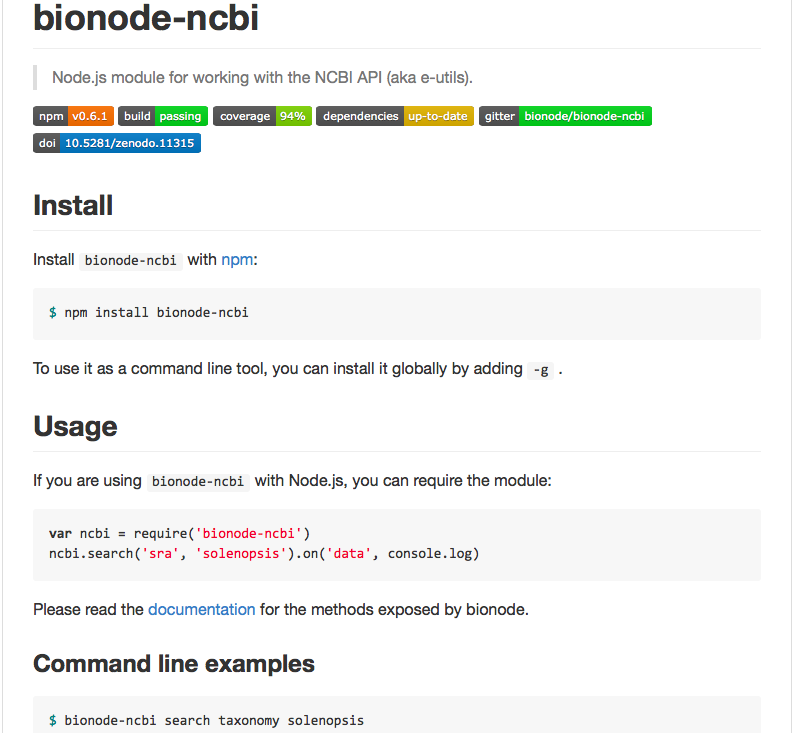

AllBio / EU CodeFest

Phd Student @ 
Bioinformatics and Population Genomics
Supervisor:
Yannick Wurm | @yannick__
Before:


Some problems I faced during my research:
Difficulty getting relevant descriptions and datasets from NCBI API using bio* libs
For web projects, needed to implement the same functionality on browser and server
Difficulty writing scalable, reproducible and complex bioinformatic pipelines
Bionode.io - Modular and universal bioinformatics

Pipeable UNIX command line tools and JavaScript / Node.js APIs for bioinformatic analysis workflows on the server and browser.
Collaborates with BioJS - Represent biological data on the web
 Dat - Build data pipelines
Dat - Build data pipelines
Provides a streaming interface between every file format and data storage backend. "git for data"
Examples
BASH
bionode-ncbi urls assembly Solenopsis invicta | grep genomic.fna http://ftp.ncbi.nlm.nih.gov/genomes/all/GCA_000188075.1_Si_gnG/ GCA_000188075.1_Si_gnG_genomic.fna.gz
bionode-ncbi download sra arthropoda | bionode-sra
bionode-ncbi download gff bacteria
JavaScript
var ncbi = require('bionode-ncbi')
ncbi.urls('assembly', 'Solenopsis invicta'), gotData)
function gotData(urls) {
var genome = urls[0].genomic.fna
download(genome)
})
ncbi.search('biosample', 'human').pipe(filter).pipe(analyse)
Difficulty getting relevant description and datasets from NCBI API using bio* libs
Python example
import xml.etree.ElementTree as ET
from Bio import Entrez
Entrez.email = "mail@bmpvieira.com"
esearch_handle = Entrez.esearch(db="assembly", term="Achromyrmex")
esearch_record = Entrez.read(esearch_handle)
for id in esearch_record['IdList']:
esummary_handle = Entrez.esummary(db="assembly", id=id)
esummary_record = Entrez.read(esummary_handle)
documentSummarySet = esummary_record['DocumentSummarySet']
document = documentSummarySet['DocumentSummary'][0]
metadata_XML = document['Meta'].encode('utf-8')
metadata = ET.fromstring('<root>' + metadata_XML + '</root>')
for entry in Metadata[1]:
print entry.text
ftp://ftp.ncbi.nlm.nih.gov/genomes/all/GCA_000188075.1_Si_gnG
Solution: bionode-ncbi
Need to reimplement the same code on browser and server.
Solution: JavaScript everywhere
Biodalliance is converting parsers to Bionode
Difficulty writing scalable, reproducible and complex bioinformatic pipelines.
Solution: Node.js Streams everywhere
var ncbi = require('bionode-ncbi')
var tool = require('tool-stream')
var through = require('through2')
var fork1 = through.obj()
var fork2 = through.obj()
ncbi
.search('sra', 'Solenopsis invicta')
.pipe(fork1)
.pipe(dat.reads)
fork1
.pipe(tool.extractProperty('expxml.Biosample.id'))
.pipe(ncbi.search('biosample'))
.pipe(dat.samples)
fork1
.pipe(tool.extractProperty('uid'))
.pipe(ncbi.link('sra', 'pubmed'))
.pipe(ncbi.search('pubmed'))
.pipe(dat.papers)
Benefit from other JS projects


Reusable, small and tested modules

Some users and Contributors:
- Dat
- Biodalliance
- BioJS
- Yeo Lab (UC San Diego)
- Michael Lovci
- Olga Botvinnik
- Afra
- GeneValidator
Soon:
- DNADigest
- Erik Garrison | erikgarrison
Thanks!
Acknowledgements:
@yannick__
@maxogden
@mafintosh
@alanmrice
@dasmoth
@biodevops
Why Node.js / JavaScript
- Streams applies well to Bioinformatics
- Easy to write CLI wrappers for Streams
- Reusable, small and tested modules
- Same language everywhere (JavaScript)
- Package Manager that works (NPM)
- Huge number modules (93327, 199/day)
- Use other JS projects (Dat, BioJS, NoFlo)
- Possible to write Desktop GUI apps in JS
Module counts

Package Manager that works

npm install bionode
npm install bionode -g
npm test
npm start
npm run test-browser
npm run build-docs
npm init
npm publish
Not only for JavaScript, C/C++ too: